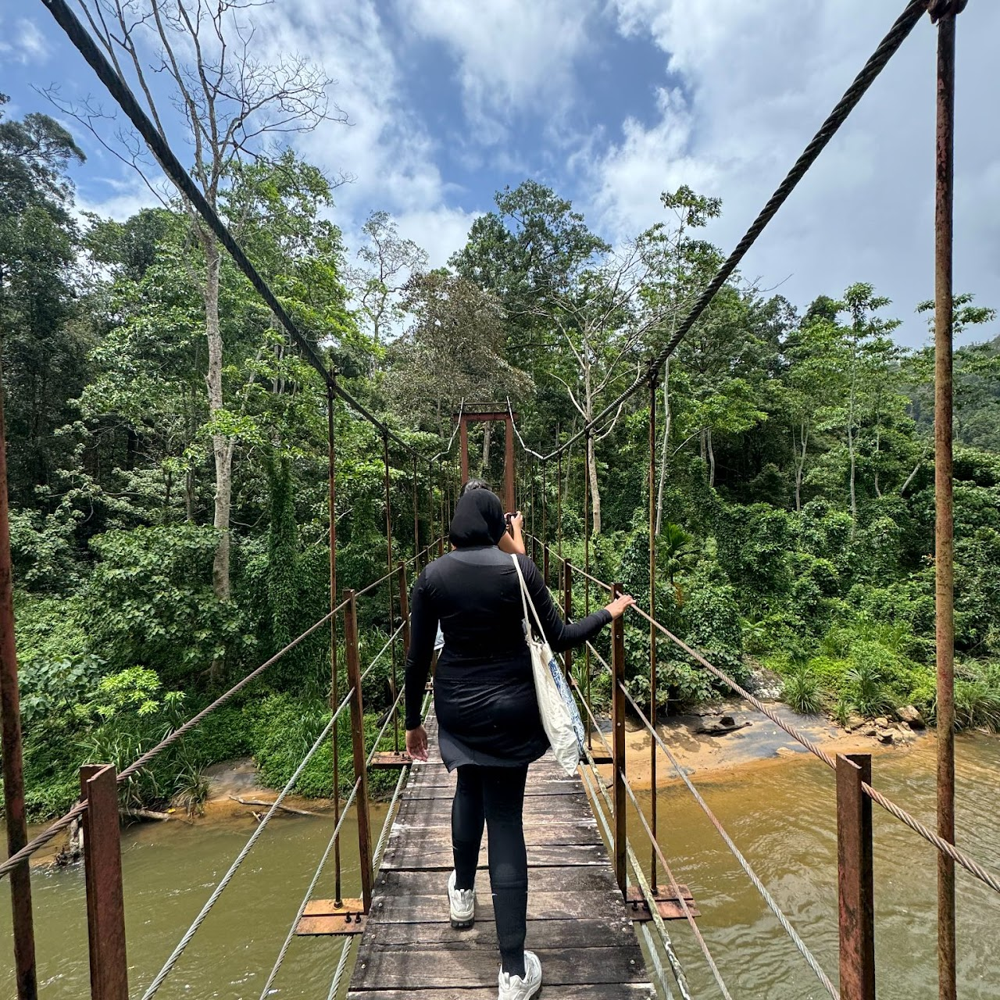

GLASS Scholar • NYU Tandon '26
Hi, I'm Fabiha
Senior pursuing Biomolecular Science with a minor in Public Policy & Management. Aspiring dentist passionate about promoting accessibility and equity in oral healthcare worldwide.

My Focus
Promoting Accessibility & Equity in Dentistry
Through cross-cultural clinical exposure, research, and policy engagement, I'm working to understand and address global oral health disparities.
Global Competency
- Study abroad at NYU Abu Dhabi
- HUMAN'INSA program in Lyon, France
- Waseda University, Tokyo, Japan
- Hanyang University, Seoul, South Korea
- Clinical shadowing in Sri Lanka & Kenya
Academic Excellence
- B.S. Biomolecular Science
- Minor in Public Policy & Management
- VIP: Everyday Assistive Technology
- Research Assistant, NYU Abu Dhabi
- Research Assistant, NYU Dentistry
Professional Development
- Dental Assistant, NYC clinic
- WCDT 2024 Conference, Tokyo
- Global Career Accelerator
- Writing Partner, Tandon Writing Center
Leadership Development
- GLASS Wellness Ambassador
- GLASS Event Planner
- Lead Designer for GLASS branding
- Tandon Accessibility Team
Commitment to Service
- Hospital volunteer, Sri Lanka
- Clinical shadowing, Kenya
- GLASS Event Team Member
- Alternative Break service trips
Highlights
Moments from My GLASS Journey
Excursion in Galle, Sri Lanka

Chancellor's Iftar at NYU Abu Dhabi

Hiking in Sri Lanka

Exploring Oingt, France
Let's Connect
I'm always eager to discuss oral health equity, global health research, or opportunities in dental healthcare. Feel free to reach out!